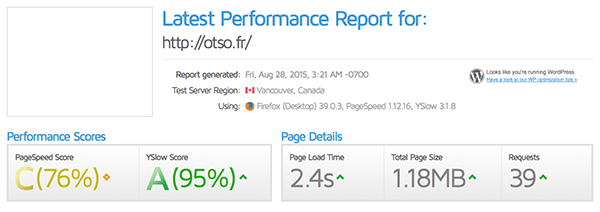
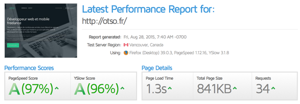

Comment j’ai exporté mon site Wordpress sous Jekyll
tl;dr Petit retour d’expérience sur ma transition avec succès entre Wordpress et Jekyll
Jekyll Origins
Cela fait quelques temps que j’avais dans l’idée de me débarrasser de Wordpress pour mon portfolio professionnel, pour plusieurs raisons que je n’exposerai pas ici (ce n’est pas le but de l’article). J’ai donc tenté d’utiliser plusieurs plugins dédiés à l’export d’un site Wordpress, mais aucun d’eux ne m’a donné satisfaction. Principalement car ils sont surtout orientés vers l’export d’articles de blog, et font l’impasse sur les pages custom.
Du coup j’y suis allé en mode subtil (!), et j’ai aspiré toutes les pages du site en html à l’aide de la commande suivante, trouvée sur le site de Matt Radford (thanks mate !) :
wget --recursive --page-requisites --html-extension --convert-links --restrict-file-names=windows --random-wait otso.fr
Ensuite, j’ai fait le nécessaire pour que tout fonctionne localement. En effet, certains fichiers n’avaient pas été rapatriés, et certains liens redirigeaint toujours sur le site en ligne.
Jekyll Begins
Une fois tous mes fichiers html fonctionnels, sans erreurs javascript ou de css, j’ai installé Jekyll dans mon projet afin de générer et mettre à jour facilement mon site. A noter que Jekyll est l’outil que j’utilise depuis la naissance de ce blog : un article = 1 fichier markdown qui sera généré en HTML lors de la mise en ligne. Plus simple, tu meurs !
Après avoir commencé le travail de nettoyage des fichiers (Wordpress, ça devient très vide crade niveau code), j’ai extrait le header et le footer dans des fichiers séparés, et j’ai créé le template de base de mes pages.
Jekyll Rises
Je suis ensuite passé à la gestion des projets de mon portfolio. J’ai donc commencé à créer une page par projet, mais me suis très rapidement lassé (après 2 projets). En vrai, je suis fainéant, et ferai tout pour me simplifier la vie !
J’ai donc trouvé un plugin Jekyll très pratique (jekyll-datapage_gen), qui m’a permis de regrouper tous mes projets dans un fichier YAML et ensuite de générer automatiquement à la volée les pages.
Le fonctionnement de ce plugin est vraiment très simple :
Télécharger le fichier _data_pagegenerator.rb depuis le dépôt Git, et l’ajouter au dossier _plugins de votre projet Jekyll
Créer un template project.html pour afficher le contenu de votre page projet
Ajouter les infos suivantes à votre fichier _config.yml (modifier suivant votre besoin)
- Remplir votre fichier YAML _data/projects.yml avec les infos souhaitées (exemple pour un projet)
Lancer la génération du site en statique avec la commande jekyll build
Accéder à une page projet via les page générées automatiquement, */portfolio/application-mobile-rue-89.html* dans l’exemple ci-dessus
J’ai du faire une petite modification du plugin, car celui-ci remplaçait automatiquement le titre de la page par le slug, ce qui ne m’arrangeait pas vraiment
self.data['title'] = data[name]
Jekyll Forever
Il ne me restait plus qu’une dernière action à effectuer pour avoir un site entièrement fonctionnel : le formulaire de contact. En effet, de base celui-ci était construit pour utiliser l’API de Wordpress. Hors, dans Jekyll, point de Wordpress, point de PHP, que du HTML/css/js ! J’ai donc modifié le script d’envoi pour passer automatiquement via l’API javascript de Mandrill, vraiment très simple à utiliser.
J’ai également installé un script Gulp afin d’optimiser/minifier/concaténer automatiquement les assets de mon site, et ainsi gagner encore un peu plus de temps de chargement.
Jekyll Triumphant
Si vous êtes curieux, vous pouvez accéder au code du site sur mon Github à l’adresse suivante : https://github.com/adriantombu/otso-jekyll
Avant de vous laisser, voilà un petit avant / après des performances de chargement de la page d’accueil, suite à mon export Wordpress sous Jekyll et quelques optimisations. J’ai encore un peu de boulot pour supprimer les scripts et css inutilisés, mais le résultat actuel est déjà très convaincant !

